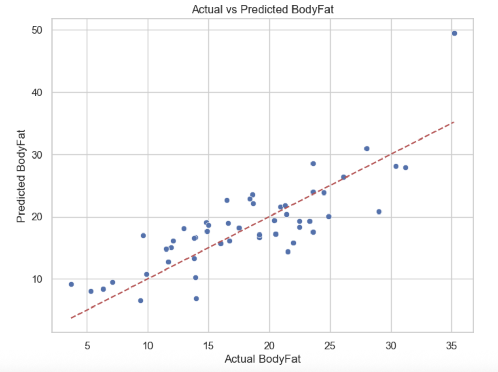

Overview
This project applies linear regression to predict body fat percentage using weight and abdomen circumference. The goal is to develop a quick and cost-effective method to estimate body fat using common physical measurements.
Process Overview
- Exploratory Data Analysis: Explored data patterns using scatterplots.
- Outlier Detection: Used boxplots and IQR to detect/remove extreme values.
- Modeling: Built linear regression using abdomen and weight as features.
- Evaluation: Compared model before and after outlier removal using MAE, RMSE, and R².
Model Results
| Metric | With Outliers | After Removing Outliers |
|---|---|---|
| MAE | 3.33 | 3.43 |
| MSE | 17.98 | 18.36 |
| RMSE | 4.24 | 4.28 |
| R² | 0.613 | 0.605 |
Despite expectations, removing outliers slightly reduced performance. This emphasized the importance of testing assumptions when cleaning data.
Figure: Actual vs Predicted Body Fat (After Removing Outliers)
This scatterplot visualizes how predicted values align with actual body fat measurements after outlier removal. While most predictions follow the expected trend, a few deviations highlight areas for future model improvement.
Value Proposition
This project shows how I applied linear regression to a real-world health use case. I learned how outliers can change model performance and why cleaning data isn't always a silver bullet. The project reflects core data science skills like Exploratory Data Analysis, modeling, and evaluation, which helped me practice presenting results clearly through visuals and metrics. It’s a great example of turning simple measurements into actionable insights.
Tools Used
- Python (Jupyter Notebook)
- Pandas, NumPy
- Matplotlib, Seaborn
- Scikit-learn (Linear Regression)
Skills Demonstrated
- Data Cleaning and Exploratory Data Analysis
- Supervised ML (Regression)
- Performance Evaluation
- Critical Thinking and Model Interpretation
Reflection
I learned how small changes in data preparation impact model results. This hands-on experience helped me understand model diagnostics, outlier influence, and the importance of visual insights.
#MachineLearning #Regression #DataCleaning #PortfolioProject